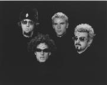

Home Up Artist links

You - You
| Artist: | You |
| Title: | You |
| Label: | self produced |
| Length(s): | 72 minutes |
| Year(s) of release: | 1997? |
| Month of review: | 03/1998 |
Line up
Vir McCoy - guitars, vocals, bass, ziltron
Justin Katz - bass, vocals
Brett Jacobson - guitar, vocals, bass
Patrick Kaliski - drums, vocals, percussion
John Schroeder - sax, flute, clarinet, synths, bass, space echo, vocals, gongs
P.J. Medina - drums, vocals, lutz vaca percussion
Tracks
| 1) | La La La | 1.33
|
| 2) | Gramma Got Born | 5.06
|
| 3) | Gnomes | 4.28
|
| 4) | Senegal | 4.37
|
| 5) | Ape-man | 4.23
|
| 6) | Ak-ak | 2.33
|
| 7) | She's My Girlfriend (tonight) | 3.45
|
| 8) | S.M.F. | 3.43
|
| 9) | Aeschylus | 1.07
|
| 10) | Blister Accordian | 1.07
|
| 11) | Ca-ca | 8.11
|
| 12) | Mr. Mann | 2.53
|
| 13) | Mucus Boy | 2.48
|
| 14) | Buster Keaton | 4.16
|
| 15) | Almond Fog | 1.56
|
| 16) | Lorax | 5.47
|
| 17) | Sandbox | 4.08
|
| 18) | Choo-choo Butterfly | 4.40
|
| 19) | The Sun Is Smiling | 3.34
|
Summary
One of those albums where I will try not to go over the songs one by one,
this is a low-budget release with lots of music from what seems to be
a wacky band that played with many a "famous" person (Blues Traveller,
Maceo Parker, Bootsy Collins). Not surprisingly, not because of the people
they played with, but the name of the band of course, they cite among their
biggest influence the French band Gong.
The music
La La La is just a bunch of children singing, you guessed it... accompanied
by acoustic guitar. At least it sounds like it. Gramma Got Born has those
typical space sounds with lots of echo. Plenty of psychedelic guitars a la
Hendrix here and like on the rest of the album rather odd lyrics. Gnomes
is a funny little track, a bit sneaky with flute, lots of bass. The music
of this track and the lyrics as well owe quite a lot to Gong in their
old days. After the worldlike Senegal, we come to the ironic Ape Man.
In weirdness one should compare this band to Primus and even better Phish.
Whereas Phish is based on Zappa/Grateful Dead, this band is more based on
Gong, but the music is more groovy and rocking than this "French" band.
Ak-Ak opens with somewhat familiar sound and by the quality of them seems
to have been culled from a vinyl record. Strange moaning, squeaking sounds.
She's My Girlfriend is sixties psychedelic type song. S.M.F. stands for
Stupid Motherfucker and features some prominent saxophone wringing.
Aeschylus is a synthy piece, a bit bouncy but with quirky vocals.
The short Blister Accordion not surprisingly features accordion, but
played backwards. With over eight minutes the longest track on this disc is
Ca-Ca which is about the people on earth cleaning up their own mess.
The song is accompanied with a comic giving a pictorial explanation of the
content. A groovy track. Then follow another eight groovy tracks with
influences from funk, jazz and psychedelica. Among which, Mucus Boy is a track
with strange, explicit vocals and lyrics about someone being ill or allergic;
Buster Keaton is lounge jazz with the famous Fender Rhodes playing a prominent
role. Almond Fog is a rowdy, bluesy rock track with growling vocals.
Lorax is an acoustic song, but Sandbox is again a raunchy bubbly rock song
in the Hawkwind tradition. After the peaceful Choo-choo Butterfly -- in which
they nicely put some bee sounds, but also some train sounds. A weird
combination but it works -- the album closes with track 19, The Sun Is Smiling,
which has a sixties beat atmosphere.
With regards to sound quality I could spot some noise in the quieter parts
especially in the beginning of the cd.
Conclusion
Generally psychedelic, varied instrumentally and musically, and lyrically
tongue-in-cheek, this is a release that might please fans of Gong and newer
psychedelic bands alike. Like Phish, the Ozrics and Gong, this band is not
to be taken seriously. The influences range from world to psychedelic
(in the Hawkwind and Gong way) to funk and jazz and the "real" songs are
typically quite groovy with a few deviations to sixties music. Although the
music is nice to listen to a few times, the band pays a little too much
attention to composition and too much time to being funny and like when you
heard a joke a few times, it wears out and the album being as long as it is,
it is quite a sit. I like them best in the raunchy rocking tracks such
as Almond Fog and Sandbox and in the languorous tracks such as Choo-Choo
Butterfly and The Sun Is Smiling. Something to check out for the people who
enjoy the bands just mentioned, but a love of groove seems to necessary with
this band and do not expect long trips here.
© Jurriaan Hage